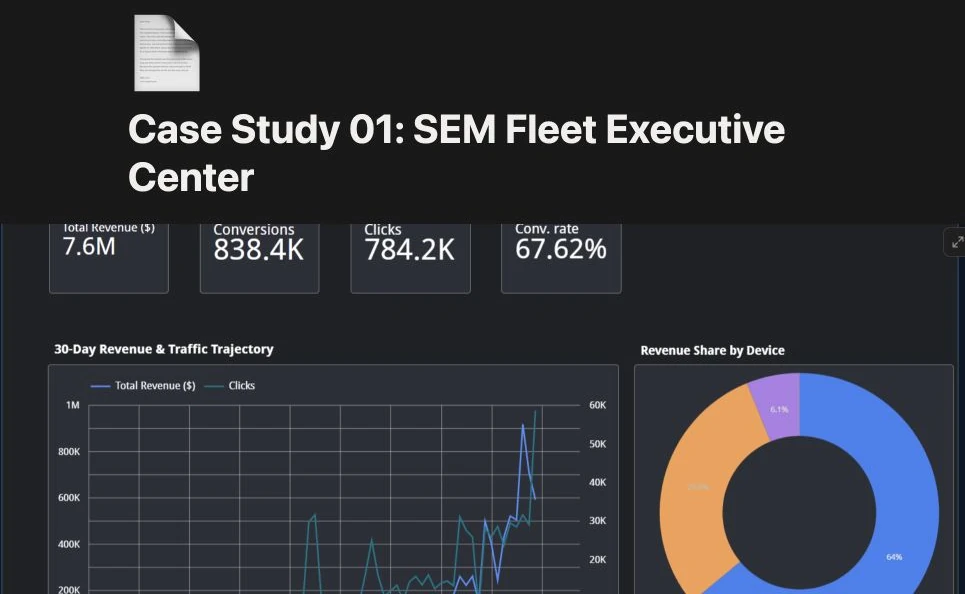
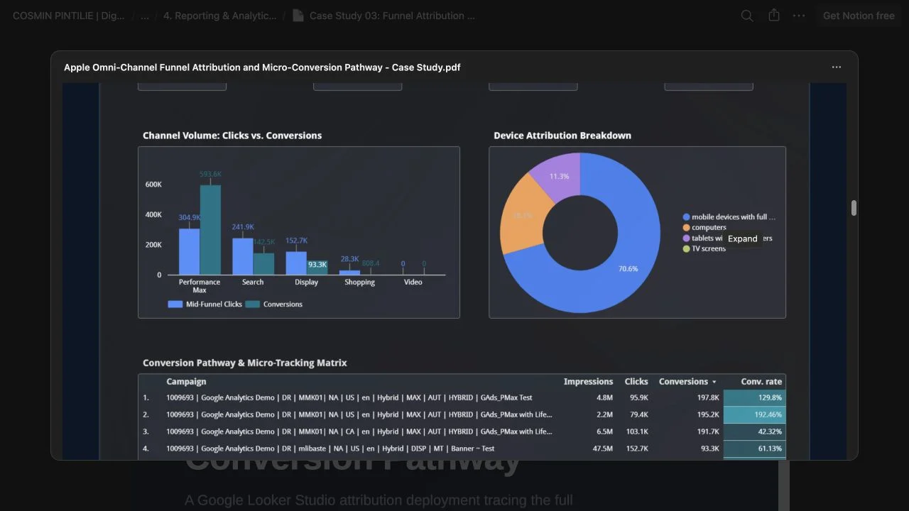

My process follows the ongoing rhythm of a client engagement—from getting access and agreeing priorities to launching, improving, and setting the next round of work.
OnboardAlign goals and access
Audit & planSet the baseline and priorities
Build & launchImplement campaigns and tracking
Optimize & testImprove queries, budgets, and creative
Report & evolveShare outcomes and set next priorities
Case studies
Sixteen hands-on cases across search strategy, measurement, optimization, and reporting. Each one shows the setup, decisions, and operating logic behind the work.
Search strategy · Account design
Apple omni-channel campaign architecture
To capture full-funnel search intent and protect brand equity, the account is organized into five specialized layers.
Start with the portfolio logic, then open each campaign case to inspect its build and controls.
Brand defense stays separate from discovery, so automated traffic cannot hide where demand began.
How it stays controlled
Each campaign has its own intent, audience, budget logic, and success criteria.
Review signals
Check query routing, budget ownership, channel roles, and overlap between campaigns.
Technical setup · Conversion measurement
GA4 & GTM conversion blueprint
An end-to-end implementation connecting web interaction signals to enterprise warehousing, with consent compliance, cross-domain stitching, accurate conversion schemas, and unsampled event streaming built in.
Review the shared specification, then open each technical pillar to inspect its configuration and validation logic.
GTM container ID
GTM-52XPWJ5
GA4 measurement ID
G-X3R766JV6K
Core key events
add_to_cart · begin_checkout · purchase
Consent Mode
Google Consent Mode v2 · default denied → dynamic update
Data warehouse target
Google BigQuery · batch + intraday streaming
Five implementation pillars
Select any pillar to open its technical blueprint and case evidence.
A day-to-day operating system for search-query sculpting, controlled ad-copy testing, and rapid response to competitive auction pressure.
Review the governance targets, then open each workstream to inspect its analysis and decision protocol.
Optimization pillar
Focus area
Core KPI / impact target
Search-term audits
Waste identification, intent sculpting, and negative-list expansion
CPA reduction & query purity
RSA A/B testing
Value-proposition messaging, CTR, and conversion-rate uplift
Ad Strength → Excellent & incremental ROAS
Auction Insights
Competitive displacement and bid-adjustment strategy
Defend top-of-page impression share
Anonymized professional work. Client identifiers, raw query data, and sensitive financial values have been withheld or selectively adjusted. The audit method, operating logic, and decisions reflect the work performed.
Three optimization workstreams
Each workstream turns an observed signal into a governed action and documented decision.
Anonymized professional work. Client names and sensitive commercial figures have been withheld or selectively adjusted. The dashboard architecture, metric logic, and management decisions reflect the work performed.
Three reporting surfaces
Each dashboard narrows the data to the decisions its audience owns.
An Apple brand protection campaign built on precision, not spend.
A from-scratch Google Search campaign engineered to defend branded search real estate—from apple store and apple.com to high-intent product queries—against competitor, reseller, and marketplace pressure.
Objective
The goal was not reach. It was ownership: protect top-of-page visibility across branded purchase queries at the lowest sustainable cost, with zero tolerance for avoidable query waste.
What this case covers
The complete operating logic—from keyword architecture and negative governance to RSA trust messaging, sitelinks, bid and budget controls, quality validation, and the first 30 days of management.
Campaign typeGoogle Ads Search
MarketUnited States
Daily budget€10.00
Bid strategyMaximize Clicks · €1.50 CPC cap
Anonymized professional case. Client identifiers, live account data, and commercially sensitive details have been withheld or adapted. The campaign structure, controls, and decision logic reflect the work performed.
Why these four decisions mattered
Every setting was a deliberate trade-off between visibility, cost control, and account safety. These four controls carried the most weight because each one determines whether a brand campaign protects demand—or quietly leaks it.
01
Exact and phrase match only—no broad match
Brand protection exists to capture a narrow, high-intent set of queries, not to discover new traffic. Exact terms such as [apple store], [apple.com], and [apple website] isolate unmistakable brand demand, while tightly scoped phrase terms such as “buy macbook online” and “buy iphone online” extend coverage only where purchase intent remains explicit.
Broad match was excluded because it can expand into irrelevant, loosely related, or competitor-adjacent searches. That expansion spends a finite defense budget on traffic the campaign was never designed to serve and weakens the clean relevance signals that make branded auctions efficient.
Operating consequence New query themes must earn their way into the campaign through search-term evidence; the algorithm cannot widen intent by default.
02
Pin “Official Apple Store” to headline position one
A responsive search ad normally benefits from letting Google reorder headlines for predicted performance. Brand defense is the exception: the ad’s primary job is to signal authenticity before resellers, marketplaces, or lookalike advertisers can create doubt on the results page.
Pinning the official-store message removes that variability. The trust signal is guaranteed to appear in headline position one on every eligible combination rather than only when the responsive-ad system happens to select it.
Trade-off accepted Some creative flexibility is surrendered in exchange for a consistent authenticity cue at the point of search.
03
Use Maximize Clicks with a hard €1.50 CPC ceiling
Maximize Clicks keeps the campaign directionally optimized for branded traffic volume, but without a cap it can spend the full daily budget while placing no ceiling on an individual click. The €1.50 maximum CPC turns that open-ended instruction into bounded automation.
For highly relevant branded terms, expected click costs are materially below the cap—the case records an estimated €0.05 average CPC. The ceiling is therefore a conservative backstop, not a target, and should be reviewed against actual CPC and impression-share evidence after launch.
Control principle Automate the direction of travel, but retain an auction-level limit on the downside.
04
Set budget from demand, not Google’s recommendation
Google recommended €32.69 per day; the campaign was deliberately held at €10.00. Branded search volume is finite, and strong relevance should allow the official advertiser to compete efficiently. Raising budget before proving a coverage constraint would risk funding platform appetite rather than incremental demand.
The correct trigger for more budget is evidence: clean search terms plus impression share lost specifically to budget. If loss is instead caused by rank—or if branded demand is already covered—additional spend does not solve the underlying problem.
Decision rule Increase budget only when lost-impression-share data proves that qualified brand demand is being missed.
Step-by-step implementation
The build followed a four-stage sequence: keyword architecture, ad creation and extensions, bidding and budget control, and final quality validation.
01Keyword architecture
02Ad creation & extensions
03Bidding & budget control
04Quality validation
Stage 1Keyword architecture
Brand and product-purchase intent terms were structured into exact and phrase match groups, isolating high-value, unambiguous branded queries from any broader, less qualified search traffic.
Fig. 1: Exact-match brand terms—[apple store], [apple.com], and [apple website]—and phrase-match purchase-intent terms—“buy macbook online” and “buy iphone online”—are enabled and scoped to the Brand Protection ad group. Open full-resolution evidence ↗
Negative keyword strategy
Alongside the positive keyword list, a negative keyword layer was built at campaign level to further insulate spend. This layer works in tandem with the exact-and-phrase-only match strategy: positive keywords define what the campaign should win; negative keywords define what it should never be allowed to spend on.
Job & career intent
apple careers
apple jobs
apple internship
Prevents brand impressions from being wasted on recruitment searches.
Repair & support intent
apple repair
apple support number
genius bar appointment
Routes existing-owner queries away from a sales-focused ad group.
Price-sensitive / bargain intent
cheap iphone
used macbook
apple refurbished ebay
Keeps the ad group aligned to official-channel intent, not resale hunting.
Competitor & marketplace terms
iphone amazon
macbook best buy
Blocks spend defending brand terms on queries that already signal intent to buy elsewhere.
Stage 2Ad creation & extensions
With the keyword layer locked, the ad itself was built to reinforce authenticity and route users directly to the highest-intent product pages.
Fig. 2: Core campaign settings confirm English-language United States targeting, audience segments including Mobile Enthusiasts +3 in Observation mode, Search Partners enabled in the source screen, and exclusion of the Display Network. Open original evidence ↗
Fig. 3: The responsive search ad pins “Official Apple Store” to headline position one, guaranteeing that the trust signal renders on every eligible impression. Open original evidence ↗
Four destination links turn one ad into a controlled routing surface.
The extension layer sends high-intent users directly to the most relevant commercial destination instead of forcing every click through a generic storefront.
Destinations
Trade In, Refurbished Deals, Shop Mac, and Shop iPhone
Copy control
Every description checked against Google’s 35-character display limit
Role
Expand search-result coverage while keeping product routing explicit
Fig. 4: Four targeted, product-specific sitelinks—Trade In, Refurbished Deals, Shop Mac, and Shop iPhone—expand the ad’s footprint. Every description was checked against Google’s 35-character display limit to avoid mobile truncation. Open original evidence ↗
Stage 3Bidding & budget control
Bidding was configured to balance click volume against cost predictability, while the daily budget was held well below Google’s recommendation.
Automation is allowed to find volume, but not to set an open-ended click price.
Maximize Clicks remains responsible for auction selection while a hard ceiling limits the cost of any individual click.
Fig. 5: Maximize Clicks runs with a strict RON 7 maximum CPC bid limit—approximately €1.40 in the source interface and documented as a conservative €1.50 ceiling—to prevent automated auctions from driving up click costs. Open original evidence ↗
Stage 4Quality validation
The fully configured campaign underwent a final quality pass across keywords, ad copy, extensions, and bid settings before the anonymized evidence was captured for review.
Validate the build—not paused-account zeros.
The overview is supporting evidence for the build state. Commercial delivery data remains outside the claim because the captured campaign was paused for review.
Validation scope
Keywords, responsive ad, extensions, audience settings, and bidding
Fig. 6: The 88.7% campaign optimization score records the completed keyword, RSA, extension, and bid configuration. The anonymized overview intentionally withholds live delivery and conversion data. Open original evidence ↗
Key metrics & success indicators
These indicators reflect configuration quality and projected efficiency, validated through the disciplined build and final review process.
Source indicator
Recorded value
How to read it
Optimization score
88.7%
Platform configuration signal after keyword, RSA, asset, and bid setup; not a commercial result.
Estimated average CPC
€0.05
Planning estimate compared with the documented €1.50 safety ceiling.
Daily budget
€10.00
Custom daily limit, held below Google’s €32.69 recommendation until qualified demand proves a coverage constraint.
Maximum CPC cap
€1.50
Documented operating ceiling; the source interface records RON 7, approximately €1.40.
Match-type discipline
100%
Every positive keyword in the build uses exact or phrase match.
Sitelinks configured
4
Trade In, Refurbished Deals, Shop Mac, and Shop iPhone route distinct commercial intent.
Audience segments
4
Four segments remain in Observation mode so they inform analysis without narrowing reach.
Bid strategy
Maximize Clicks
Volume automation constrained by the documented maximum-CPC safety ceiling.
30-day operating plan
Everything above documents how the campaign was built. This plan documents how it would be managed after launch, because a strong build is only the first half of running a real account.
Week 1 · Verify and observe
Check the search terms report daily against the exact- and phrase-match list to confirm no unexpected query variants are slipping through.
Confirm the negative keyword layer is catching the traffic it was designed to catch—recruitment, repair, bargain, and marketplace intent—with zero impressions bleeding through.
Week 2 · Consolidate negatives
Migrate the recruitment, repair, and bargain-hunting themes proven in this build—jobs, repair, free, and cheap—into a shared account-level negative keyword list so every other eligible Apple Search campaign inherits the same protection automatically.
Week 3 · Bid and coverage review
Compare actual average CPC against the €1.50 cap. If real CPCs remain close to the €0.05 estimate, test whether the cap can be tightened further without losing impression share.
Review impression share lost to rank and lost to budget specifically on branded terms to confirm the €10.00 daily budget remains sufficient as query volume shifts.
Week 4 · Extend the pattern
Use this campaign’s negative list and match-type discipline as the reference template for every new Apple brand or product campaign, rather than rebuilding the same protections from scratch.
Proposed account-level shared negative list
The campaign-level themes generalize into a shared protection layer that other eligible Search campaigns can inherit.
Support
Retail / bargain
Recruitment
repair
cheap
jobs
warranty
free
career
manual
coupon
hiring
forum
used
internship
The Flagship Driver
An Apple iPhone Search campaign built for volume, not waste.
A from-scratch Google Search campaign built to capture the full range of iPhone 17 purchase intent, from exact-match buyers to comparison shoppers, while keeping every dollar accountable. The goal was not just reach; it was efficient volume: high Ad Strength, tight intent match, and zero tolerance for wasted spend.
Objective
Capture bottom-funnel iPhone 17 demand across commercial, comparison, and transactional searches without allowing automation to loosen match types, destinations, or budget control.
What this case covers
The complete build: campaign structure, keyword architecture, ad copy and extensions, bidding and budget controls, and the 30-day launch protocol, with campaign-console evidence at each documented stage.
Campaign typeSearch
MarketUnited States
Daily budget€81.20
Bid strategyMaximize Conversions
Anonymized professional case. Client identifiers, live account data, and commercially sensitive details have been withheld or adapted. The campaign structure, controls, console configuration, and decision logic reflect the work performed; no live commercial outcome is claimed.
Section 1Goal selection & campaign type definition
Establishing the foundational settings of the campaign. Built without a guided template to keep full control over the settings and bidding structure.
Full-control Search campaign configuration.
The source records the objective flow, channel, naming convention, and destination selected at campaign creation.
Fig. 1: Campaign objective and type selection from the higher-resolution source supplied in the supporting document. Open high-resolution evidence ↗
Behind the strategy
Choosing “Create a campaign without guidance” meant bypassing Google’s default, budget-heavy pre-packaged configurations, and the campaign was named using a standard convention (US - Search - iPhone Flagship Driver) for clean account organization. The pre-guided objective flows, like the simple “Sales” template, were skipped because they limit advanced configuration options downstream and often hide critical network, bidding, and match-type settings.
Focusing the campaign purely on bottom-funnel “Purchase” conversions and enabling secure data tracking.
Behind the strategy
The “Purchase” goal was selected so Smart Bidding optimizes strictly for high-value sales rather than vanity metrics, and Enhanced Conversions was turned on to capture privacy-safe, hashed first-party data for more accurate attribution. Lighter micro-conversion goals like “Page views” or “Sign ups” stayed off the table because optimizing for top-of-funnel actions dilutes the bidding algorithm’s focus and drives spend toward non-buying traffic.
Fig. 2: Bidding settings cropped from the higher-resolution source to remove empty capture margins while preserving the complete configuration. Open high-resolution evidence ↗
Behind the strategy
Bidding stayed strictly on Conversions without a Target CPA limit at first, so the system can gather data without performance constraints during the learning phase, and “Adjust bidding to help acquire new customers” was left unchecked to treat all buyers equally and capture demand from both loyal upgraders and new switchers. Setting a strict tCPA this early would limit bidding flexibility and choke ad delivery before Google has enough historical data.
Restricting ad delivery to high-intent Google search results and enforcing tight geographic targeting.
Behind the strategy
Targeting was set to “United States” with “Presence” selected under location settings so ads only serve users physically in the target country, and the Google Search Partner Network and Display Network were unchecked because Partners and Display expand ads onto external websites and search bars, introducing low-intent traffic and bleeding budget. Google’s default “Presence or Interest” option was skipped too, since “Interest” lets users physically located elsewhere who are merely searching about the US trigger the ad. Audience segments were left collapsed and blank, to be added to the “Observation” tab once the campaign goes live rather than restricting delivery through Targeting Mode from day one.
Section 5Bypassing Google’s auto-applied AI Max expansion
Keeping strict control over match types and final landing-page URLs.
Behind the strategy
AI Max was turned off to keep manual oversight of the keyword match types and search terms. Left on, Google’s AI can automatically alter the ad copy, change landing pages, and expand keyword matching to broad, unrelated queries, which would undo the campaign’s structural precision.
Section 6Skipping automated asset generation
Declining Google’s automated machine-learning assets in favor of tailored, human-written copy.
Behind the strategy
Automated generation was skipped to keep the ad copy strictly aligned with premium brand guidelines and accurate product details. Auto-generated copy often sounds robotic, pulls outdated data from the website, or misstates exact promotional specifics.
Section 7Sitelink asset setup
Building out the expanded sitelinks during the initial creation workflow to cover the full buyer-intent spectrum.
Six destinations cover product choice and utility intent.
The sitelink layer routes searchers directly to the most relevant model or shopping tool instead of forcing every click through one generic page.
Hardware lineup
Shop iPhone 17 Pro, Explore iPhone 17 Air, Shop iPhone 17, and iPhone 17 Pro Max
Utility routes
Apple Trade In and Compare iPhone Models
Copy limits
Sitelink text under 25 characters; description lines under 35 characters
Sitelinks were drafted to show the full hardware lineup (Pro, Air, Standard, Pro Max) alongside useful utility options like Trade-In and Compare, keeping the copy tight rather than long-winded: sitelink text stayed under 25 characters and description lines under 35 characters, so everything reads cleanly on both desktop and mobile without truncation.
Section 8Intent-focused keyword configuration
Setting up the search-term matrix using exact and phrase matching to capture pure commercial intent.
Exact and phrase match define the eligible intent.
The core matrix keeps the product family broad enough for volume while reserving explicit purchase terms for controlled match types.
Exact purchase term
[buy iphone 17]
Phrase terms
“buy iphone 17 online”, “iphone 17 deals”, and “iphone 17 pro max”
Excluded recommendation
No upgrade to broad match and no automated keyword expansion
Fig. 4: Keyword input cropped from the higher-resolution source around the complete configuration and recommendation controls. Open high-resolution evidence ↗
Behind the strategy
Targeted exact matches [ ] and phrase matches “ ” tell Google’s algorithm precisely what searches are valuable, keeping costs efficient. Generic, single-word keywords like “iPhone” or “phone” were skipped because broad keywords generate high impression volumes but convert poorly, and Google’s inline prompts to “upgrade keywords to broad match” and “add more keywords” were ignored because either would loosen the intent targeting this build was aiming for.
Search intent segmentation
Beyond match type, the keyword list also splits cleanly by where the searcher is in the decision, which is what actually keeps ad copy relevant to each click.
Commercial
Comparison
Transactional
“iphone 17 deals”
iphone 17 vs pro max
[buy iphone 17]
“iphone 17 pro max”
iphone 17 vs 16
“buy iphone 17 online”
iphone 17 price
which iphone 17 to buy
order iphone 17
Section 9Responsive Search Ad copy: headlines
Crafting engaging, relevant headlines that align closely with the target keywords to earn an “Excellent” Ad Strength rating.
Headline evidence, transcribed at readable resolution.
The documented responsive ad combines exact product language with distinct buying and value propositions.
Ad Strength
Excellent
Keyword-led headlines
Official Apple iPhone 17 · Buy iPhone 17 Online
Product-led headlines
iPhone 17 Pro & Pro Max · The All-New iPhone 17
Value proposition coverage
Financing, the new chip, design, and a direct buying prompt
Fig. 6: Complete headline editor and preview cropped from the higher-resolution source around the relevant interface. Open high-resolution evidence ↗
Behind the strategy
The exact target keywords were worked into the first few headlines, giving Google’s automated testing more strong combinations and keeping the search query mirrored in the ad copy, while avoiding repetitive titles and vague CTAs. Every headline carries its own value proposition, whether that is financing, the new chip, design, or a direct buying prompt.
Section 10Responsive Search Ad copy: descriptions & active assets
Completing the ad build by pairing the headlines with description copy, trade-in details, and service callouts.
Behind the strategy
Headlines were paired with descriptions covering financing, trade-in credit, and delivery speed, the kinds of details that tend to tip a comparison shopper into clicking, and no optional asset field was left blank because skipping description variations or callouts lowers the ad’s quality signals. Callouts like “Free 2-Day Delivery” and “Flexible Payment Plans” sit near the top of the ad, so the offer is visible before someone even taps through.
Section 11Daily budget configuration
Setting the daily budget for the campaign.
Behind the strategy
A custom daily budget of €81.20 was set rather than accepting Google’s suggested figure, because this campaign is meant to carry the majority of the daily spend as the primary volume driver in the account, so the number needed to be deliberate rather than a placeholder default. The automatic budget expansion Google offers by default was also rejected, keeping spend under direct control rather than letting the platform raise it during high-traffic periods.
Section 12Negative keyword strategy
A 37-keyword campaign-level negative keyword list built to isolate pure, high-intent buyers, set to Phrase Match.
Accessories
case
screen protector
charger
Blocks accessory-only demand from the flagship purchase budget.
Support & repairs
repair
fix
screen replacement
Separates existing-owner service queries from new-device purchase intent.
Low-value searches
cheap
fake
replica
Prevents bargain and counterfeit intent from consuming premium-product spend.
Informational / job searches
manual
pdf
jobs
Removes research and employment queries with no device-purchase signal.
Source scope: The case records a 37-keyword list and displays representative terms from each of its four categories; the remaining list entries are not shown in the supplied source.
Behind the strategy
Negative keywords were researched and built out across these four categories, so spend stays tied to actual prospective buyers. Leaving that list empty would let a campaign targeting “iPhone 17” keywords quickly lose a chunk of budget to people who already own the phone and are just looking for cases or screen repairs.
Section 1330-day optimization plan
Everything above documents how the campaign was built. This section documents how it would be managed after launch.
Week 1 · Verify & observeCheck search terms daily against the exact/phrase match list, and confirm the negative list is catching the accessory, repair, and bargain traffic it was built for.Pause any headline or description combination underperforming the ad-group average once volume is sufficient to judge it.
Week 2 · Audience & biddingAdd the high-value in-market segments noted earlier—mobile phone upgraders and comparable enthusiast audiences—into the Observation tab now that the campaign is live, rather than leaving that step open-ended.Review early conversion volume against the 30-in-30 threshold for introducing a Target CPA.
Week 3 · Asset & landing-page reviewTest new sitelink or callout variations against the current set, and confirm the landing-page experience matches whichever product page each headline promises.
Week 4 · Consolidate & extendLayer in a Target CPA once the campaign clears roughly 30 conversions in a 30-day window, rather than leaving Maximize Conversions uncapped indefinitely.Fold the case, repair, cheap, and free negative-keyword themes into the shared, account-level negative list alongside the other Search campaigns in this portfolio.
Mac B2B & pro creator
Search architecture for technical buyers, teams, and enterprise demand, using precise destinations and language as pre-qualification.
ChannelGoogle Ads Search
AudienceEnterprise and professional buyers
Daily budget€50.00
Bid strategyMaximize Conversions
Anonymized professional case. Client identifiers, audience data, and commercial outcomes have been withheld or adapted. The segmentation, construction, and governance logic reflect the work performed.
B2B is a different conversion system
The campaign is built as a dedicated native Search route with Purchases as the primary conversion goal so bidding learns from commercial and fleet orders rather than lighter engagement. In a mature B2B account, quote requests, brochure downloads, or contact-sales events can remain secondary signals while CRM-imported closed-deal value completes the picture. That longer buying cycle is why the campaign must be judged on qualified order and pipeline evidence, not consumer click volume alone.
Bidding, networks, and acquisition controls
Maximize Conversions runs without Target CPA at first because developers, creative directors, and IT procurement teams form a small but valuable audience. Maximize Conversion Value becomes the stronger choice only when reliable order values or CRM revenue can distinguish a workstation fleet from a single notebook. Search Partners and Display are disabled, United States presence targeting is enforced, and customer-acquisition-only bidding remains off until first-party matching is trustworthy.
Control before automation
AI Max, Final URL Expansion, and Text Customization remain disabled. A buyer looking to place a bulk workstation order should not be routed to a consumer article or support page, and automatically generated retail language should not replace exact chip, memory, deployment, or volume-pricing terms. In this campaign, destination and language accuracy are part of qualification.
Intent architecture
Exact terms such as [m5 macbook pro] and [mac studio m5] capture core hardware specifications. Phrase terms such as "macbook pro for developers" and "apple enterprise hardware" capture professional and procurement language. Broad match stays out because it would open the campaign to casual consumer research with no clear corporate purchase signal.
Commercial
Comparison
Problem-aware
Transactional
macbook pro price
macbook vs dell xps
best laptop for developers
order mac studio
mac studio m5 price
macbook vs thinkpad
best workstation for creative pros
bulk macbook pro purchase
Sitelinks then act as SERP-level filters: request a bulk quote, configure a workstation, set up Apple Business Manager, or submit tax-exemption information.
Enterprise assets
Volume discounts, zero-touch deployment, workstation configuration, and tax handling make the buying context explicit.
Technical ad copy
Headlines focus on professional use, exact specifications, fleet needs, and direct procurement rather than generic lifestyle claims.
Consumer exclusions
Bargain, free, tutorial, career, education-discount, repair, warranty, and store-hours terms are blocked from the corporate budget.
Protected B2B language
Business and enterprise phrases remain eligible even when automated recommendations suggest excluding unfamiliar variants.
The source RSA build replaces the previously shown zero-data diagnostics screen. Its ten specification-led headlines pre-qualify developers, creative teams, and enterprise buyers without padding the asset set with weak consumer variations.
Negative-keyword governance
Bargain and retail
cheap, discount, clearance
Free and informational
free, tutorial, how to
Jobs and careers
jobs, hiring, resume
Academic intent
student discount, college, back to school
Consumer support
repair, warranty, store hours
These are broad-match negatives because any query containing them is incompatible with the intended procurement route. Business, enterprise, and deployment terms are explicitly protected from automated exclusion recommendations.
Headline architecture
Ten focused, specification-led headlines are used instead of padding the RSA with weak variations. Examples include Designed for Developers, Pro Video & 3D Workstations, Apple Business Manager Ready, and Free Delivery & Bulk Pricing. Together they pre-qualify the buyer and connect technical capability with the commercial terms that procurement teams need.
30-day optimization plan
Week 1 · Verify and observeReview search terms daily and confirm student, job-seeker, bargain, and consumer-support exclusions are working.
Week 2 · Conversion-data reviewAssess whether Purchases alone represents the long cycle; add qualified quote or contact-sales events only when they can be reconciled offline.
Week 3 · Bidding refinementIntroduce Target CPA after sufficient volume, or move toward conversion value when order values or CRM revenue are reliable.
Week 4 · Consolidate and extendPromote proven negative themes to shared lists and feed sales-quality learning back into keywords, assets, and landing pages.
Competitor conquesting
A controlled Search route for comparison and switching demand without unsupported product claims or indiscriminate competitor traffic.
ChannelGoogle Ads Search
Daily budget€30 test allocation
Bid strategyMaximize Conversions
Anonymized professional case. Client identifiers, competitor benchmarks, and commercially sensitive auction data have been withheld or adapted. The response framework and campaign decisions reflect the work performed.
Campaign setup and bidding
The Purchases-focused campaign is named US - Search - Competitor Conquesting (Android Switchers) and isolated from flagship Search so competitor costs, policy risk, and switcher conversion quality can be evaluated independently. Maximize Conversions starts without Target CPA while the campaign establishes a baseline; a CPA constraint is considered only after roughly 30 conversions in 30 days. Search Partners and Display remain off, United States presence targeting is enforced, and the conservative €30 daily budget keeps the test bounded while competitor-auction costs are still volatile.
AI Max and landing-page control
AI Max, Final URL Expansion, and Text Customization remain off. Switcher intent must reach the dedicated migration page promised in the ad, not a generic product, support, or editorial destination. Direct control also prevents automatically rewritten comparison language from creating unsupported claims.
A dedicated switching route
The campaign is separated from the flagship iPhone build so competitor economics, policies, and message tests can be evaluated independently. Its final URL must resolve the objections raised in the ad: a trade-in calculator, a Move to iOS walkthrough, evidence from real switchers, carrier-compatibility answers, and financing information. Locking a URL has little value if the destination still behaves like a generic product page.
Query and message strategy
Three ad groups keep competitor themes separate. Phrase match covers flagship model families and explicit switching language; exact match covers specific configurations. Broad match stays off because it would invite general news, troubleshooting, accessories, and existing-owner support queries.
Ad group
Theme
Example keywords
Samsung flagships
Galaxy S-series buyers
"Samsung Galaxy S26", [Samsung S26 Ultra]
Pixel flagships
Google Pixel buyers
"Google Pixel", [Google Pixel Pro]
Switch intent
Ecosystem migration
"switch from android to iphone", "best android phone"
The ad focuses on reducing migration friction rather than making unsupported superiority claims. Concrete headlines include Move to iOS in 1 Easy Step, Transfer Apps & Photos Safely, Seamless Android Transfer, Trade In Your Android Phone, and Get Credit Toward iPhone. Descriptions name the Move to iOS app and pair the transfer promise with trade-in value so the process feels specific rather than promotional.
Four sitelinks answer distinct objections instead of repeating the same destination: trade-in value, switching guidance, model comparison, and financing or carrier help.
The anonymized ad build centers switching assistance and destination relevance rather than unverified superiority claims.
Exclusions and review
Existing-owner support
repair, screen replacement, customer service
Accessories and resale
case, charger, used, refurbished
Informational intent
manual, forum, teardown, review
Protected switcher intent
switch from android, trade in galaxy, move to ios
The exclusion themes use broad-match negatives because any query containing those existing-owner, support, or resale signals conflicts with the campaign's acquisition purpose. Switcher phrases remain explicitly protected. A live test would monitor search terms, policy status, assisted conversions, CPA, landing-page completion, and switching behavior. Legal approval and a defined comparison-claim standard are launch requirements, not cleanup tasks.
30-day optimization plan
Week 1 · Verify and observeReview search terms daily and confirm the negative list blocks existing-owner support, repair, accessory, and resale traffic.
Week 2 · Sculpt phrase trafficReview flagship-model search terms twice weekly; promote winning modifiers to exact match and exclude unwanted variants as they surface.
Week 3 · Validate the switch routeConfirm every click reaches the dedicated page with trade-in calculator, Move to iOS walkthrough, switcher proof, compatibility FAQ, and financing.
Week 4 · Consolidate and extendApply the 30-conversions-in-30-days gate before Target CPA, then move proven support, resale, and informational themes into shared lists.
Performance Max portfolio growth
A governed cross-channel growth layer designed to extend the Search portfolio without hiding where demand began.
ChannelGoogle Ads Performance Max
ReachSearch, YouTube, Display, Discover, Gmail, and Maps
Daily budget€50.00
Bid strategyMaximize Conversions
Anonymized professional case. Client identifiers, live account data, and sensitive performance details have been withheld or adapted. The controllable inputs and governance logic reflect the work performed.
Campaign and bidding setup
The campaign is named US - PMax - Apple Portfolio Growth, built without a guided template, and optimized to Purchases. The Merchant Center feed is deliberately disabled because this case demonstrates an asset-led campaign controlled through written copy, imagery, destinations, and audience signals rather than an automatically populated shopping feed. Maximize Conversions runs without Target CPA or Target ROAS for the first 14 days so the system can learn across Search, YouTube, Display, Discover, Gmail, and Maps before a constraint limits delivery. New- and existing-customer bidding remain equal, and United States targeting uses Presence rather than Presence or Interest.
One governed foundation
One asset group, All Products - Core Creative, points to the selected product destination and carries the shared trade-in, switching, business, and core-hardware message. One group is appropriate because those angles remain coherent across the promoted hardware. A materially different offer or persona, such as service plans or a student campaign, would receive its own asset group rather than stretching this one beyond a shared message.
Complete inputs for automation
All 15 short-headline and 5 long-headline slots are filled within their 30- and 90-character limits, alongside five distinct descriptions covering trade-in, upgrade financing, switching, and enterprise use. The automated call to action is overridden with a fixed Shop now so YouTube, Discover, and Display placements retain a commercial prompt.
Four sitelinks maintain the portfolio's recurring buyer routes: Business Solutions, Trade-In Value, Compare iPhone Models, and Shop Mac & iPad. Video remains the only incomplete format: zero bespoke videos means the platform can auto-generate weaker YouTube creative, so the launch backlog explicitly calls for two to three purpose-built trade-in and switching videos.
The asset-group setup establishes the destination and coherent creative unit that the rest of the PMax build depends on.
Audience signals and first-party maturity
The starting signal combines search themes such as apple hardware deals, upgrade to iphone, macbook pro custom spec, and best workstation for creative pros with in-market consumer-electronics, mobile-phone, and laptop audiences. These are hints, not targeting boundaries; PMax remains free to find conversions outside them.
Signal
Source
Role
Customer Match
CRM or consented email list
Seed from known purchasers instead of generic affinity alone.
Website visitors
Analytics or tag audiences
Reconnect with warm researchers who did not convert.
Past purchasers
Order-history export
Separate upgrade messaging from first-time acquisition.
Competitor intent
Qualified custom segments
Guide switcher creative without treating the signal as a hard rule.
Brand and waste protection
Brand exclusion list
apple store, apple.com, buy iphone online
Support and repair
repair, warranty, genius bar
Bargain and resale
cheap, used, refurbished
Governance purpose
Prevent PMax from claiming inexpensive branded demand already controlled by Search and keep post-purchase traffic out of the growth layer.
The campaign-level negatives are a safety net, not a keyword architecture. The brand exclusion is the more consequential control because without it PMax can cannibalize Brand Defense and Flagship Search, inflating apparent performance rather than adding new reach.
30-day optimization plan
Week 1 · Verify distributionRead channel and search-category insights to see whether early conversions come from Search, YouTube, Display, Discover, Gmail, or Maps; verify destinations and purchase tracking.
Week 2 · Protect brand and complete videoApply the brand exclusion list and upload two to three bespoke trade-in and switching videos instead of relying on auto-generated YouTube creative.
Week 3 · Enrich signalsAdd Customer Match and website-visitor audiences when consented first-party data is available, moving beyond generic platform categories.
Week 4 · Govern biddingKeep the €50 daily test budget deliberate and use the same 30-conversions-in-30-days gate before considering Target ROAS or another bid constraint.
GTM architecture & consent governance
A governed container, event-trigger, release, and Consent Mode architecture with an engineering-ready commerce payload.
ToolsGoogle Tag Manager and GA4
PatternEvent-driven data layer
StatusAnonymized implementation
Anonymized professional implementation. Property IDs, container IDs, domains, and business data have been removed or substituted. The architecture and consent-governance approach reflect the work performed.
A decoupled measurement layer
Business-significant interactions are pushed into a structured dataLayer and consumed asynchronously by the container. This avoids brittle listeners tied to CSS selectors or DOM structure, so a front-end redesign does not silently break the measurement contract. GTM owns container and trigger orchestration, GA4 owns event and e-commerce reporting, and the Conversion Linker persists eligible first-party click identifiers.
Container responsibilities
Google tag
Fires on Initialization – All Pages so the measurement identity and session context exist before event-scoped tags.
Conversion Linker
Also runs at initialization to preserve eligible advertising click identifiers in first-party context.
Commerce events
Listen for named data-layer events such as add_to_cart, not presentation-layer clicks or class names.
Consent governance
Begin from denied storage states where required, then update state from the consent-management platform before eligible tags act.
The container uses self-documenting tags and explicit triggers rather than opaque click listeners.
Engineering data contract
The payload clears stale e-commerce state before sending a new item array. Currency, value, SKU, name, price, quantity, and category are typed consistently so the same event can support GA4 reporting and downstream advertising use.
Named container versions record who changed the implementation, what changed, and when it was released. Preview, DebugView, and backend reconciliation form the release gate; a published container version alone is not proof that the data is correct.
Stream architecture & cross-domain linking
A session-continuity blueprint covering linked domains, referral exclusions, internal traffic, retention, and enhanced measurement.
ToolGA4 web stream
JourneyMarketing site to storefront and checkout
Retention14 months
Anonymized professional implementation. Property IDs, domains, and business data have been removed or substituted. The stream architecture, controls, and validation method reflect the work performed.
Keep one journey as one journey
A campaign may begin on a marketing domain, continue on a storefront, and pass through a payment service before purchase. Without deliberate configuration, those boundaries can fragment a single visitor into separate sessions and allow a payment referral to overwrite the original acquisition source.
The source architecture links apple.com and store.apple.com through GA4’s Configure your domains control. GA4’s native linker carries the Client ID through eligible links so one user journey remains one session; the receiving page must not discard the linker parameter before analytics reads it. Enhanced Measurement remains enabled, then its automatically collected events are reviewed against the custom event plan to prevent duplicate signals.
Governance controls
Domain rules
Register apple.com and store.apple.com with narrow contains rules in Configure your domains, avoiding unrelated hosts.
Referral exclusions
Exclude known payment and checkout services so their return redirects do not claim acquisition credit.
Internal traffic
Define employee, developer, QA, and staging traffic before activating filters that could permanently remove it.
Retention
Use a 14-month event retention setting to support seasonal and year-over-year Explorations.
The stream administration surface holds the domain, internal-traffic, and tag controls used by the blueprint.
Validation path
Start a controlled session with campaign parameters, cross every domain and payment boundary, then verify the same client and session context survives. Confirm the original source remains intact, unwanted self-referrals are absent, key events fire once with the expected parameters, and internal test traffic is labeled before any exclusion filter becomes active.
Key events, e-commerce models & validation
A commerce-event contract joining funnel definitions, required item parameters, counting rules, and real-time evidence.
ToolGA4 e-commerce
Core eventsadd_to_cart, begin_checkout, purchase
CountingOnce per event
Anonymized professional implementation. Property identifiers, transaction data, and customer details have been removed or substituted. The event schema and QA method reflect the work performed.
Measure business milestones, not every interaction equally
The event model promotes three standard commerce milestones to key events: cart addition, checkout start, and purchase. They anchor the buying funnel and give downstream reporting and bidding systems a smaller, more meaningful signal set than raw clicks, scroll depth, and page views.
add_to_cartbegin_checkoutpurchase
Shared payload contract
Parameter
Type
Purpose
item_id
String
Stable SKU across all funnel events
item_name
String
Readable product label in reporting
price
Number
Per-unit price at interaction time
quantity
Integer
Units represented by the action
currency
ISO 4217 string
Reliable multi-currency rollups
value
Number
Total commercial value for reporting and bidding
E-commerce milestones count once per event so separate item actions remain visible. Engagement-style goals may instead use once-per-session counting where repeat actions would inflate the intended outcome. Default lead-event placeholders can remain documented and unused rather than being mistaken for active commerce events.
The registry distinguishes the intended commerce events from unused default lead-generation placeholders.
End-to-end QA
Pre-productionInspect the data-layer payload and tag sequence in GTM Preview before publishing.
Real timeUse DebugView to confirm event order, trigger timing, and every required parameter.
Processed reportsConfirm registered events and revenue appear after normal processing.
Source reconciliationMatch transaction identifiers, orders, currency, value, and refunds against the commerce backend.
Custom definitions, metrics & user properties
A registration map connecting raw commerce parameters to useful event-scoped and user-scoped analysis.
ToolGA4 schema governance
Event scopeitem_category
User scopecustomer_type
Anonymized professional implementation. Property identifiers, customer attributes, and business data have been removed or substituted. The definition strategy and activation paths reflect the work performed.
Registration makes parameters reportable
Raw payload keys can arrive in the GA4 event stream without becoming available as useful breakdowns. Registration is the governance step that turns a collected value into a dimension or metric. Scope must match what the value describes: a product category belongs to an individual event, while a customer type describes the person across sessions until updated.
Two definitions, two jobs
Product category
Event-scoped · item_category
Breaks commerce interactions and revenue down by catalog family such as smartphones, laptops, and wearables.
Customer status
User-scoped · customer_type
Persists a classification such as guest, registered, or VIP for cohort analysis and consent-aware audience building.
The registered dimensions support custom Exploration tables such as revenue by product category and engagement by customer tier. A user-scoped property can also support audience activation, subject to consent, policy, and data-quality requirements.
The administration table confirms the two custom definitions are registered at their intended scopes.
Validation
Inspect raw parameter values first, confirm that naming and case are consistent, then wait for processing before testing report availability. Audience activation should only follow after value coverage, consent eligibility, membership logic, and refresh behavior have been verified.
BigQuery export & cloud warehousing
An event-level export design covering daily and streaming modes, data residency, warehouse ownership, and analytical use.
SourceGA4
DestinationGoogle BigQuery
ModesDaily and streaming
Anonymized professional implementation. Property IDs, cloud project details, and warehouse data have been removed or substituted. The export architecture and governance logic reflect the work performed.
Why leave the reporting interface
The GA4 interface is built for fast product reporting, not arbitrary event-level analysis over an unrestricted history. A BigQuery export exposes collected events, parameters, user properties, and item arrays for SQL modeling, custom retention, CRM joins, and reproducible transformation logic. The warehouse does not improve poor collection; it makes the collected structure available for deeper inspection.
Export choices
Daily export
Cost-conscious historical pipeline
One partitioned table per day supports scheduled reporting, long-horizon analysis, and models that do not need same-hour data.
Streaming export
Low-latency operational pipeline
Streaming export supports fresher dashboards, anomaly detection, and operational use cases that cannot wait for the next daily partition.
The Google Cloud project, dataset region, access roles, retention, query-cost controls, and downstream owner must be defined before linking. Dataset residency is a governance choice because it cannot be changed retroactively without creating a new export path.
The anonymized integration surface documents the export configuration without exposing the production property or cloud project.
Downstream capabilities
Attribution: flatten event parameters and item arrays to model touchpoints with explicit SQL logic.
Lifetime value: build cohorts and revenue histories beyond interface-level reports.
CRM joining: connect consented identifiers to downstream customer records under defined governance.
Business intelligence: publish approved, anonymized tables to Looker Studio or Power BI.
Machine learning readiness: prepare governed features for Vertex AI only after data quality, cost, and privacy controls are in place.
Search-term audit & negative-keyword governance
A repeatable query-classification and exclusion workflow for locating waste without blocking valuable intent.
EvidenceAnonymized working extract
Anonymized scope1,200+ queries
CadenceDaily triage and bi-weekly governance
Anonymized professional case. Client identifiers, raw queries, and sensitive financial values have been withheld or selectively adjusted. The audit method, exclusion logic, and decisions reflect the work performed.
Method and decision log
Every search term is evaluated against intent, spend, conversion evidence, and the account structure it should belong to. The audit avoids treating all zero-conversion traffic alike: a commercially relevant query may need a dedicated exact keyword, a new ad group, or more data rather than an immediate negative.
Query
Signal
Decision
Directive
buy macbook pro 16 inch
High commercial intent, positive CVR
Keep and scale
Promote to exact
free macbook pro pdf manual
Informational, no conversion
Negative exact
Add [free] and [pdf]
apple macbook repair store near me
Service intent, no conversion
Negative phrase
Add "repair"
galaxy s23 ultra case leather
Accessory and competitor noise
Negative phrase
Add "galaxy"
macbook pro trade in value
Mid-funnel, positive CVR, wrong route
Isolate
Dedicated exact campaign
Two levels of exclusions
Search account
Campaign-level sculpting
Protect Brand Defense from competitor terms, isolate trade-in and support intent from Flagship, and keep branded demand out of PMax where required.
Account-level shared lists
Apply universal zero-intent, secondary-market, employment, support, and post-purchase exclusions consistently across eligible campaigns.
The anonymized inventory verifies that governed shared lists exist at account level while withholding client-specific query and performance data.
Operating thresholds and cadence
Spend without conversion
A term reaching $50 in a rolling 30-day window with no conversion is flagged for triage within 48 hours, not auto-blocked.
CTR decay
An exact keyword below 60% of its ad-group average across 1,000+ impressions triggers match and message review.
Match-type isolation
A converting broad or phrase term is promoted to exact and then excluded from the source route to prevent internal competition.
A controlled test comparing price-anchor messaging with friction-reduction messaging under commercial guardrails.
CampaignNon-brand flagship Search
Primary contrastPrice anchor vs. switching simplicity
Minimum sample2,000 clicks per variant
Anonymized professional case. Client identifiers, creative details, and sensitive test values have been withheld or selectively adjusted. The experiment design and rollout decisions reflect the work performed.
Hypothesis and thresholds
For non-brand Android switchers, Concept B reduces perceived migration friction with one-click transfer and switching-assistance language. Concept A anchors the offer in price, financing, and product performance. The pre-registered thresholds require at least 2,000 clicks per variant, more than 15% CTR uplift, more than 10% CVR uplift, and 95% statistical confidence, while downstream CPA and ROAS must hold or improve.
Controlled asset matrix
Asset
Copy
Concept
Role
Headline
Official Apple Store — Fast Free Shipping
Control A
Brand relevance
Headline
Switch to iPhone Effortlessly — Move in 1-Click
Variant B
Friction reduction
Headline
Get Up to $250 Instant Trade-In Credit
Variant B
Switcher incentive
Headline
Powered by A19 Bionic — Unmatched Performance
Control A
Feature anchor
Headline
Transfer Photos & Contacts Instantly
Variant B
Switcher reassurance
Description
Transfer your Android files, photos, and settings with Move to iOS.
Variant B
Migration CTA
Description
Get zero-percent financing and fast, free delivery on all models.
Control A
Value anchor
The anonymized builder verifies complete asset inventory and “Excellent” ad strength; ad strength is a setup signal, not the experiment outcome.
Anonymized decision matrix
Control A4.1% CTR · 2.8% CVR · $142 CPA
Challenger B5.8% CTR · 4.2% CVR · $95 CPA
The matrix is a decision aid, not a winner announcement. CTR shows whether the proposition earns attention, CVR tests whether the landing-page promise carries through, and CPA prevents a click-rate lift from being mistaken for commercial improvement. The 95% confidence and minimum-sample gates must be met before any rollout rule is applied.
If B wins and commercial guardrails hold: scale the winning proposition across non-brand switcher campaigns and update related asset groups.
If the result is inconclusive: retain the learning and test a clearer CTA contrast rather than declaring a winner early.
If A wins or downstream economics worsen: revert to ecosystem-authority messaging and test pricing separately.
Competitive auction response
A bounded response memo that distinguishes rank pressure, budget pressure, demand movement, and competitor displacement.
WindowAnonymized 14-day alert
Primary signalSearch impression-share loss
OutputThree-step response protocol
Anonymized professional case. Client identifiers, competitor names, and sensitive auction values have been withheld or selectively adjusted. The diagnosis and response protocol reflect the work performed.
Situation diagnosis
The anonymized alert shows flagship Search impression share falling from 78% to 63%. Lost impression share from rank rises by 11 points while lost share from budget remains stable at 4%, indicating that simply increasing the daily budget would not address the observed problem. Competitor overlap and top-of-page presence are the hypotheses to investigate, not proof by themselves.
Domain
Impression share
Overlap rate
Top of page
Outranking share
apple.com
63.2%
—
82.4%
—
samsung.com
24.8%
48.6%
74.1%
18.2%
bestbuy.com
18.5%
36.2%
58.9%
12.4%
amazon.com
14.1%
28.5%
46.3%
8.1%
The anonymized panel withholds competitor identities and sensitive auction values; the accompanying table preserves the diagnostic logic used to interpret the populated report.
Three-step response
Adapt the SERP assetsDeploy a structured snippet and callout test centered on “Instant $250 Trade-In Credit for Non-Apple Laptops,” subject to legal and offer validation.
Run a bounded rank testTest Target Impression Share at 75% absolute top of page only on the core exact-match switcher terms, rather than changing the entire campaign fleet.
Intercept qualified intentAdd custom-segment themes such as Samsung trade-in deal and Galaxy Book promo to the relevant PMax asset group as learning signals, not hard targeting.
Success is not “recover impression share at any cost.” The test must monitor CPC, CPA, conversion quality, and marginal return so a rank response does not create a larger commercial problem.
SEM fleet executive center
A leadership reading path from portfolio status to historical trend, device composition, campaign accountability, risks, and owned actions.
ToolLooker Studio
AudienceMarketing leadership
WindowJanuary 2018 to July 2024
Anonymized professional case. Client names and sensitive revenue, conversion, and campaign figures have been withheld or selectively adjusted. The dashboard architecture and executive reading logic reflect the work performed.
Four layers, four questions
Status
Revenue, conversions, clicks, and conversion rate answer whether the fleet is healthy now.
Trend
Revenue and traffic on the same timeline show whether volume and value are moving together.
Composition
Device revenue makes the operating mix visible and informs experience investment.
Accountability
A campaign matrix exposes where spend, clicks, conversions, and revenue are concentrated.
The sequence moves from “How are we doing?” to “Where does the result come from?” before anyone changes a campaign. Limiting the first layer to four metrics protects the executive view from becoming another analyst dashboard.
Anonymized dashboard read

The executive control surface keeps the four top-line KPIs, time-series movement, and device composition visible together before the reader enters the campaign accountability matrix.
Mobile64.0%
Desktop29.9%
Tablet6.1%
The anonymized trend is relatively flat through most of 2020, then shows revenue and clicks rising together and reaching peak monthly revenue above $900K in late 2023. The dashboard treats the post-2020 period as the more relevant operating baseline while still requiring the team to explain seasonality, attribution changes, and tracking incidents before forecasting from it.
Campaign interpretation
Signal
Observation
Working implication
Top PMax value
$1.8M–$2.0M per campaign
Investigate whether proven structures can absorb incremental budget.
Heatmap concentration
High-density cells cluster around PMax and hybrid structures
Review PMax as a scaling candidate, subject to incrementality and marginal return.
Search role
Secondary contributor in the model
Retain deliberate brand and high-intent query control.
Concentration alone does not prove causality. The working response is to improve the inputs automation depends on—first-party signals, creative depth, feed quality, and offline outcomes—while testing marginal return instead of fragmenting spend into more campaigns.
Risk and executive roadmap
Mobile CPC inflationMonitor mobile CPA
PMax concentrationMonitor revenue share by campaign
Impression-share lossSeparate rank from budget
Creative fatigueMonitor CTR trend
Budget saturationMonitor marginal ROAS
Revenue accelerationTest incremental budget in top-decile structures and deepen the asset groups and signals supporting them.
Mobile efficiencyPrioritize page speed, checkout, and mobile creative while maintaining desktop coverage and reviewing tablet priority.
Reporting governanceUse the dashboard as the standing review layer and add efficiency-normalized metrics to the campaign matrix.
ROAS & budget pacing monitor
A financial control view joining spend, revenue, calculated return, pacing, campaign profitability, risks, and approval-ready reallocations.
ToolLooker Studio
AudienceFinance and marketing
MetricActual ROAS at campaign grain
Anonymized professional case. Client names and sensitive spend, revenue, and profitability figures have been withheld or selectively adjusted. The pacing logic and budget decisions reflect the work performed.
One calculated field
Actual ROAS (%) = (SUM(Conversion Value) / SUM(Cost)) × 100
The field is computed at campaign grain and then aggregated so the portfolio scorecard and campaign matrix use the same mathematical definition. A displayed result of 1,244.30% is equivalent to 12.44x: $12.44 in attributed conversion value for every $1 of anonymized spend. Percentage format supports a finance reading, while the multiple can remain a secondary representation.
The dashboard moves from portfolio-level fiscal status to trend and then to campaign-level pacing and profitability.
Reading and action thresholds
In the model, two Search campaigns sit at 0.91x–0.92x while the strongest PMax example reaches 54.62x. A campaign sustained below 1.0x is returning less attributed value than spend before margin and other business costs; it becomes a freeze-and-review candidate rather than a routine optimization ticket.
Review thresholdBelow 1.0x for two consecutive months
Anonymized scaling candidate54.62x PMax example
The comparison remains incomplete until attribution windows, conversion value quality, campaign volume, margin, incrementality, and brand cannibalization are checked. A high platform ROAS is a prioritization signal, not automatic permission to scale.
Risk controls
PMax concentrationRevenue share of top three campaigns
Brand cannibalizationBrand vs. non-brand Search ROAS
Test dilution30-day blended ROAS trend
Budget creepSpend share below 1.0x
Seasonal pressureQ4 CPC and marginal return
Budget governance roadmap
Reallocate deliberatelyFreeze or reduce sustained sub-1.0x campaigns and submit a documented shift toward proven candidates for approval.
Use marginal rulesDirect new budget to the strongest eligible structures until incremental ROAS shows diminishing return.
Audit underperformersCheck query mix, brand adjacency, tracking, and landing experience before concluding the campaign itself is the problem.
Automate alertsAdd month-over-month pacing thresholds so campaigns crossing into unprofitable territory are surfaced before the next manual review.
Funnel attribution & micro-conversion pathway
A journey dashboard connecting traffic, devices, channels, macro outcomes, and stacked diagnostic events.
ToolLooker Studio
AudiencePerformance and measurement teams
WindowJanuary 2020 to July 2024
Anonymized professional case. Client names and sensitive channel, device, and event figures have been withheld or selectively adjusted. The attribution model and QA logic reflect the work performed; rates above 100% still require an event-definition audit.
A dashboard shaped like the journey
Macro scorecards
Impressions, clicks, conversions, and the defined macro rate show the largest anonymized drop.
Channel volume
Clicks and counted events appear side by side so acquisition and event output are not confused.
Device completion
Bottom-funnel event share identifies where the anonymized journey finishes.
Pathway matrix
Campaign rows reveal exactly where stacked events produce rates above 100%.

The source dashboard keeps the channel comparison, device completion mix, and campaign-level pathway matrix together so rates above 100% can be traced to the underlying counted-event definition.
Anonymized channel and device read
Channel
Clicks
Counted events
Interpretation
Performance Max
304.9K
593.6K
Multiple counted events per click; audit event mix before comparing efficiency.
Search
241.9K
142.5K
Lower event-to-click ratio than PMax in the anonymized data.
Display
152.7K
93.3K
Investigate traffic quality and completion friction.
Mobile70.6%
Computers18.1%
Tablets11.3%
What a rate above 100% means
The pathway matrix models campaigns at 129.8% and 192.46% because the numerator includes multiple diagnostic events—such as cart additions, checkout starts, purchases, and post-purchase actions—against clicks. That can describe event density, but it is not a literal purchase success rate and cannot justify budget expansion on its own.
Useful signal
Which campaigns and sessions generate deeper measured interaction across the defined event set.
Required control
Separate macro purchase outcomes from micro events, document the formula, deduplicate transaction IDs, and report both views.
Risk and recommendations
Double countingQuarterly event-definition audit
Mobile frictionClick-to-purchase drop-off
PMax concentrationMacro outcome share, top three
Display wasteQualified outcome per click
Dormant channelsImpression and click volume
Separate outcome typesReport purchases and revenue independently from stacked diagnostic events before reallocating budget.
Audit mobile completionPrioritize page speed, checkout, and form friction where most anonymized completion events occur.
Rebuild weak channelsFix creative and destination alignment before adding Display or Video budget.
Formalize governancePublish event definitions, calculation grain, deduplication rules, and a reconciliation owner.
Working templates
Three practical references for query exclusions, experiments, and monthly reporting. Open a summary here or read the full version.
Negative keyword libraryQuery routing and waste reduction
A three-tier exclusion architecture prevents cannibalization and keeps broad discovery traffic from overriding exact, brand, or service intent.
A/B testing playbookExperiment design and rollout decisions
The four-stage process keeps tests focused and reduces early calls: isolate one variable, check the sample, evaluate the result, and record the decision.
HypothesisName one variable and the expected behavior change.SampleRun long enough and collect enough eligible traffic to judge it.EvaluateRead CTR, CVR, CPA, and quality guardrails together.Scale or learnRoll out the winner or record why the result was inconclusive.
Minimum 14-day duration to capture weekday and weekend behavior.
Target 95% confidence before declaring a winner.
Track CTR, CVR, CPA, and creative-quality guardrails together.
Log inconclusive tests so minor variations are not repeated.
Managed Google Search and Meta campaigns across product categories, optimising budgets, bidding, audiences, and campaign structure toward CPA, conversion-volume, and revenue targets.
Search & funnel
Query analysis, negative keywords, match-type optimisation, and high-intent demand.
Experimentation
A/B frameworks for creative, messaging, promotions, prospecting, and retargeting.
Measurement
GA4 and GTM e-commerce events, conversion validation, and campaign attribution.
Reporting
Cross-channel spend, CPA, ROAS, revenue, budget pacing, and segmented analysis.